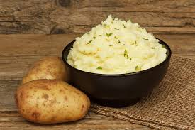

Pure de papa

Descripción
El puré de papas es un acompañamiento reconfortante y clásico que complementa perfectamente carnes y vegetales.
Con su textura suave y cremosa, y un sabor delicadamente mantecoso, es ideal para cualquier comida casera.
Ingredientes
- 4 papas medianas (preferiblemente papas para hervir, como las Yukon Gold)
- 1/2 taza de leche caliente (puedes usar leche entera o vegetal, según tu preferencia)
- 2 cucharadas de mantequilla (ajusta al gusto)
- Sal y pimienta al gusto
Preparación
- Cocinar las papas: Pela las papas y córtalas en trozos uniformes. Hiérvelas en una olla grande con agua y sal hasta que estén muy tiernas (unos 20 minutos).
- Escurrir y triturar: Escurre bien las papas y colócalas en un bol grande. Tritúralas con una prensapapas o un tenedor hasta obtener un puré suave.
- Agregar leche y mantequilla: Agregue la leche caliente y la mantequilla. Mezcle suavemente hasta que el puré esté cremoso.
- Condimentar: Agrega sal y pimienta al gusto. Puedes ajustar la textura agregando más leche si lo prefieres más suave.
- Servir: Sirve caliente como acompañamiento de carnes, pollo o vegetales asados.
Inicio